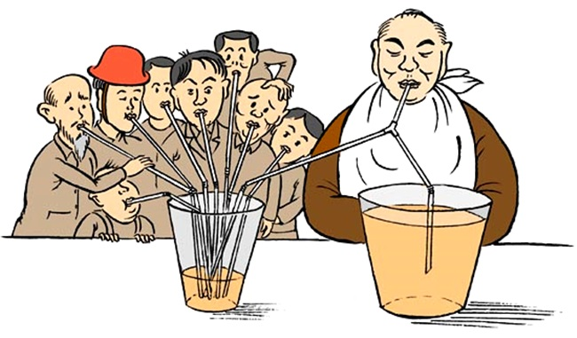
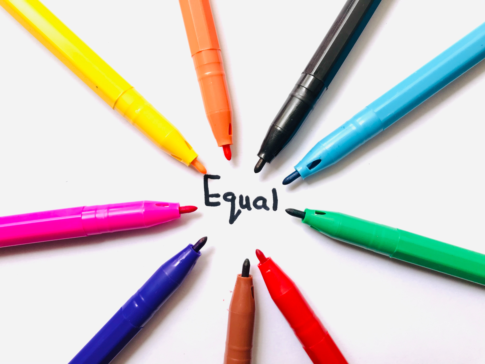

Projeto de Combate a Desigualdade
Desigualdade de Gênero

A desigualdade de gênero infelizmente está enraizada em vários tópicos em nossas sociedades patriarcais, como no mercado de trabalho, escolas, política e tantos outros. Enfrentar a discriminação contra as mulheres no mercado de trabalho é necessário pois muitas vezes as mulheres são privadas de seus direitos. Promover a diversidade no trabalho com salário justo e igual para ambos os gêneros é uma forma de combater a desigualdade de gênero no mercado de trabalho.
Desigualdade Social
Uma boa administração e distribuição de renda é essencial para o desenvolvimento do país, melhorar a qualidade do gasto do dinheiro público, combater a corrupção, evitar acúmulo de capital e investir mais em saúde e educação sem distinção entre classes de ricos e pobres, são os principais fatores para acabar com esse tipo de desigualdade.
Desigualdade Racial
Devemos enfrentar o racismo pois ele afeta a vida de muitas pessoas, a discriminação é um grande problema em nossa sociedade, as pessoas precisam ter empatia pelo psicológico do outro, independente de cor, raça, religião, fé, origem, orientação sexual, gênero ou condição econômica, ninguém pode julgar-se melhor.
Desigualdade Regional

Convivemos ainda com as desigualdades regionais, que se referem às desigualdades entre as regiões, entre estados e entre cidades. Analisando o desenvolvimento socioeconômico de cada região, a desigualdade é notória.Adotar medidas para combater a desigualdade regional é indispensável para mudar o padrão de crescimento da economia, fazendo que a prosperidade beneficie o país por inteiro. A inclusão social é algo crucial que pode auxiliar no combate a essa desigualdade.